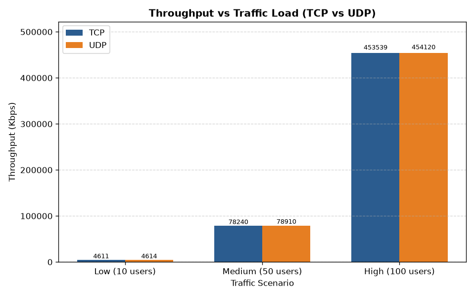
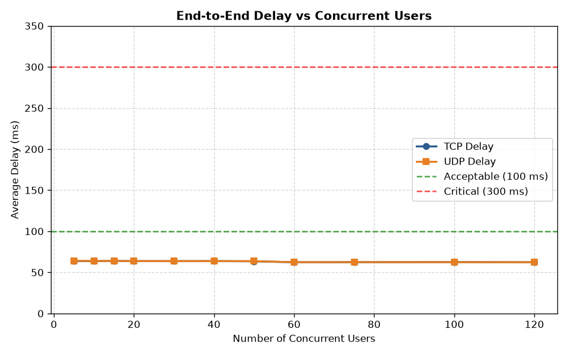
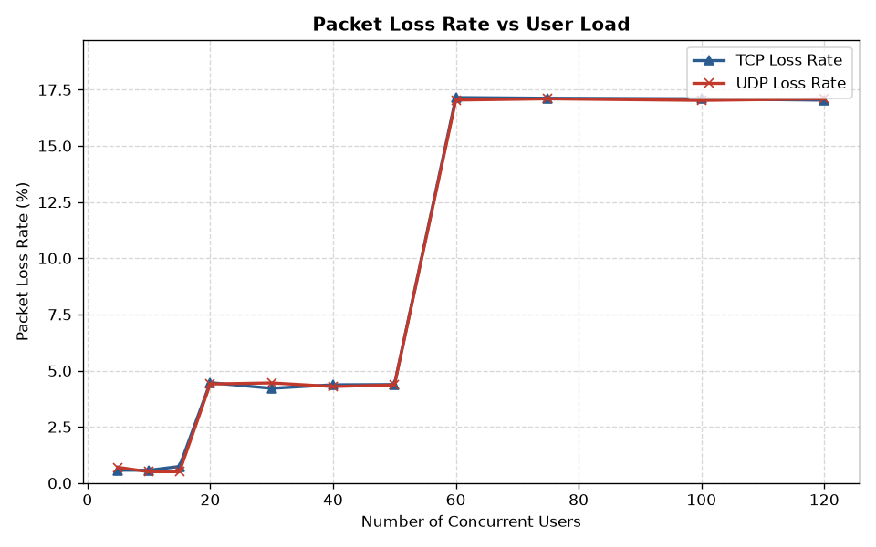
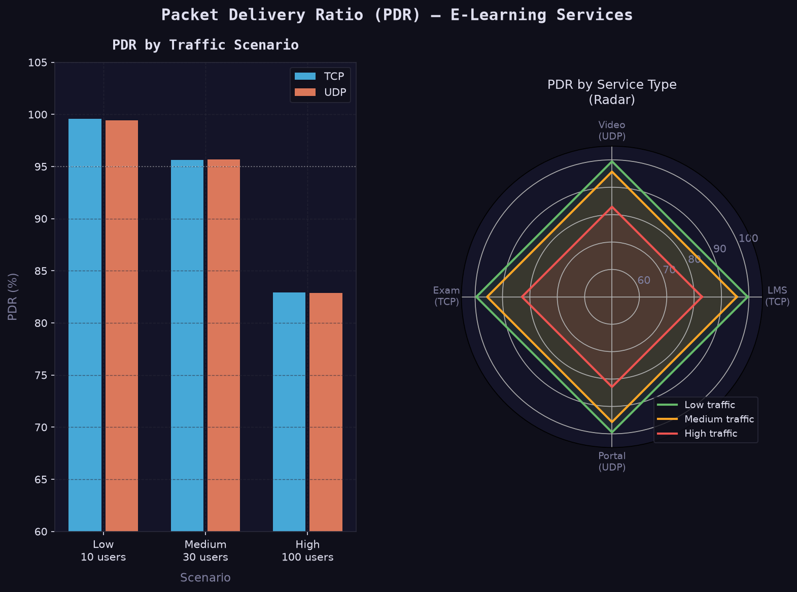
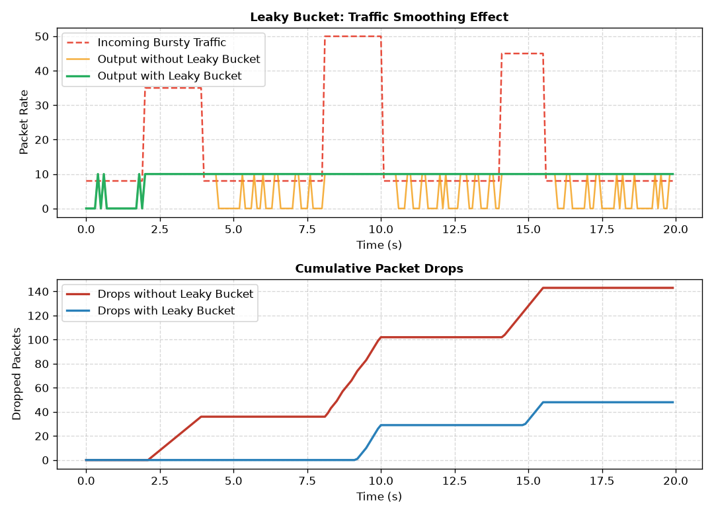
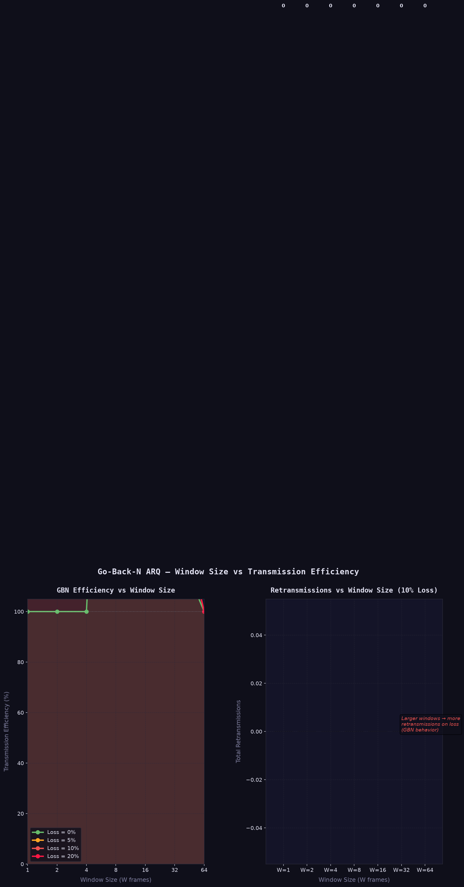

1. Problem Statement
A university provides online classes, video lectures, a Learning Management System (LMS), a student portal, and an examination portal. A large number of students accessing these services simultaneously can generate heavy network traffic and cause congestion, packet loss, increased delay, and reduced throughput. This project develops a network performance analysis system to study the effect of user load and traffic conditions on e-learning communication.
2. System Implementation in NS-2
The e-learning server, campus routers, and student nodes are modeled directly in NS-2:
- E-Learning Server (Node 0): Hosts the LMS, examination portal, and video streams.
- Campus Core Router (Node 1): Acts as the network gateway and bottleneck link.
- Student Nodes (Nodes 2..N): Access university services simultaneously under different loads.
Traffic Scenarios & Services:
| Service | Protocol | Traffic Type | Characteristics |
|---|---|---|---|
| Learning Management System (LMS) | TCP | FTP / File Transfer | Reliable delivery, flow control |
| Online Examination Portal | TCP Reno | Critical Data | Zero loss tolerance, window-based control |
| Video Lectures & Live Classes | UDP | CBR (Constant Bit Rate) | Real-time streaming, delay-sensitive |
| Student Portal | UDP | CBR | Lightweight queries & notifications |
User Load Scenarios:
- Low Traffic: 10 concurrent students (normal day)
- Medium Traffic: 30 concurrent students (peak lecture hours)
- High Traffic: 100 concurrent students (exam submission / registration rush)
3. Algorithms & Core Concepts
Sliding Window & Go-Back-N ARQ
Implements reliable data transmission for LMS and Exam portals. The sender can transmit up to a window size W frames before waiting for ACKs. If a packet is lost or times out, Go-Back-N retransmits the lost packet and all subsequent packets in the window.
Window Sizes Tested: W = 4, W = 16, W = 64
Leaky Bucket Traffic Shaping
Video streams generate bursty traffic that causes router queue overflows and packet loss. The Leaky Bucket algorithm buffers incoming bursty packets and releases them into the network at a steady, constant leak rate (e.g., 1 Mbps), eliminating congestion and packet loss.
Key Effect: Converts irregular bursts into a smooth, predictable flow.
4. Performance Graphs & Results
Performance charts generated from the NS-2 simulation trace analysis:
Chart 1: Throughput vs Traffic Load

Comparison of system throughput between TCP and UDP as student traffic increases.
Chart 2: End-to-End Delay vs User Load

Average end-to-end delay (ms) across increasing concurrent student loads.
Chart 3: Packet Loss Rate (PLR %)

Packet loss rate increases under high user load due to router buffer congestion.
Chart 4: Packet Delivery Ratio (PDR %)

Percentage of transmitted packets successfully delivered to destinations.
Chart 5: Leaky Bucket Traffic Shaping Impact

Comparison of bursty unregulated traffic vs smooth Leaky Bucket output and packet drops.
Chart 6: Go-Back-N Window Size vs Efficiency

Impact of window size (W) on transmission efficiency and retransmissions under loss.
5. How to Run the NS-2 Simulations & AWK Scripts
# 1. Run NS-2 Simulations (TCL scripts):
cd ns2_simulations
ns elearning_topology.tcl
ns go_back_n.tcl
ns leaky_bucket.tcl
# 2. Analyze Trace Files with AWK Scripts:
cd ../awk_scripts
awk -f throughput.awk ../ns2_simulations/elearning_output.tr
awk -f delay.awk ../ns2_simulations/elearning_output.tr
awk -f packet_loss.awk ../ns2_simulations/elearning_output.tr
# 3. Generate Performance Charts (Python):
python python_engine/generate_charts.py